Case (i): The bias current at the emitter junction,  is 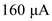
is 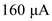
Calculate the drain current of half circuit of differential amplifier.

Substitute for  .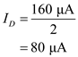
.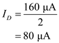
Calculate the value of trans-conductance,  .
.
Substitute 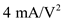 for and  for
for  .
.
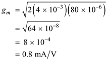
Case (i): The bias current at the emitter junction, is 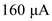
Calculate the drain current of half circuit of differential amplifier.
Substitute for .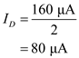
Calculate the value of trans-conductance, .
Substitute 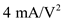 for and for .
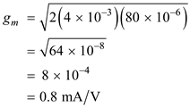
Calculate the value of differential gain, .
Substitute 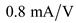 for and  for
for  .
.
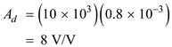
Thus, the value of differential gain, for 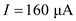 is 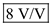.
Consider the expression for trans-conductance to calculate overdrive voltage,  .
.
Substitute for  and 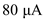 for
and 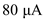 for  .
.
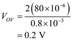
Calculate the value of input offset voltage, .
Where is the worst case
Substitute 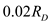 for and  for
for  .
.
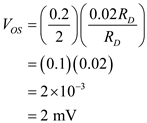
Thus, the value of input offset voltage,  for is 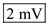.
for is 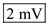.
Case (ii): The bias current at the emitter junction,  is
is
Calculate the drain current of half circuit of differential amplifier.

Substitute for  .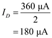
.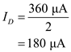
Calculate the value of trans-conductance,  .
.
Substitute  for and for
for and for  .
.
Substitute 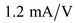 for  and
and  for
for  .
.
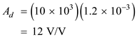
Thus, the value of differential gain, for is 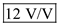.
Consider the expression for trans-conductance to calculate overdrive voltage,  .
.

Substitute for  and
and  for
for  .
.
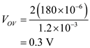
Calculate the value of input offset voltage,  .
.
Where  is the worst case
is the worst case
Substitute  for and
for and  for
for  .
.
Thus, the value of input offset voltage,  for is 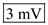.
for is 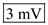.
Calculate the ratio of two gains.
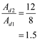
Calculate the ratio of two input offset voltages.
Thus, both the ratios of  and
and  increase by the same factor, since both are proportional to . So, the any bias currents can choose depending on the requirement.
increase by the same factor, since both are proportional to . So, the any bias currents can choose depending on the requirement.